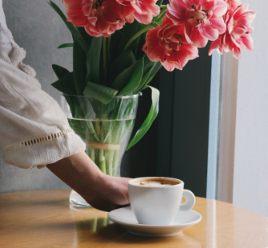

あのイーハトーヴォのすきとおった風、夏でも底に冷たさをもつ青いそら、うつくしい森で飾られたモリーオ市、郊外のぎらぎらひかる草の波。 またそのなかでいっしょになったたくさんのひとたち、ファゼーロとロザーロ、羊飼のミーロや、顔の赤いこどもたち、地主のテーモ、山猫博士のボーガント・デストゥパーゴなど。
そのころわたくしは、モリーオ市の博物局に勤めて居りました。十八等官でしたから役所のなかでも、ずうっと下の方でしたし俸給ほうきゅうもほんのわずかでしたが、受持ちが標本の採集や整理で生れ付き好きなことでしたから、わたくしは毎日ずいぶん愉快にはたらきました。殊にそのころ、モリーオ市では競馬場を植物園に拵こしらえ直すというので、その景色のいいまわりにアカシヤを植 え込んだ広い地面が、切符売場や信号所の建物のついたまま、わたくしどもの役所の方へまわって来たものですから、わたくしはすぐ宿直という名前で月賦で買った小さな蓄音器と二十枚ばかりのレコードをもって、その番小屋にひとり住むことになりました。
